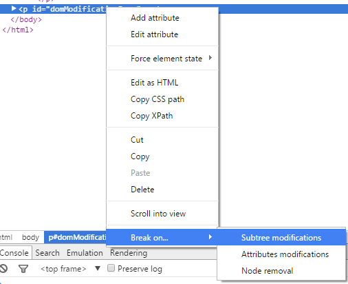

Breakpoints on DOM modifications is a useful way of simply making Chrome breakpoint when a dom modification happens. This is useful when attempting to track down what code is triggering what changes to your page - especially on products when you don't necessarily have control over all code running in the page.
Once again, it often lands you in the library which is modifying the DOM (even if it's blackboxed). The stacktrace is your friend.
To run the following demo, add a subtree modification breakpoint on the p tag containing the button and click "Show me!". You can add a subtree modification breakpoint like this:
